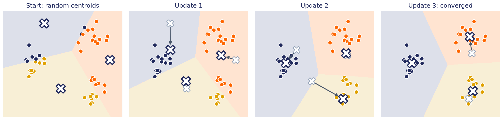
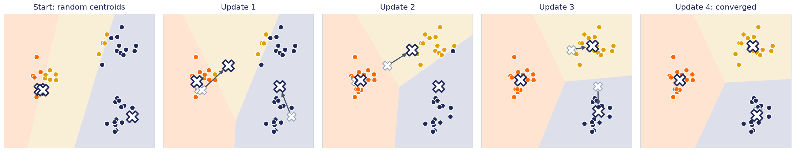
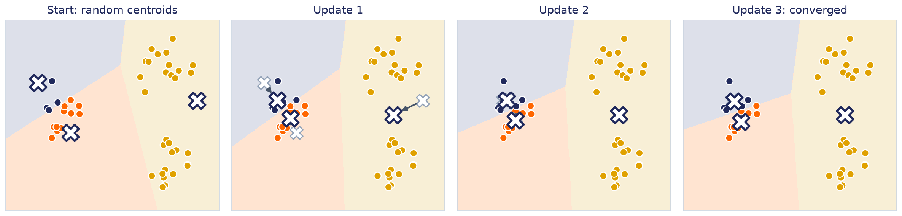
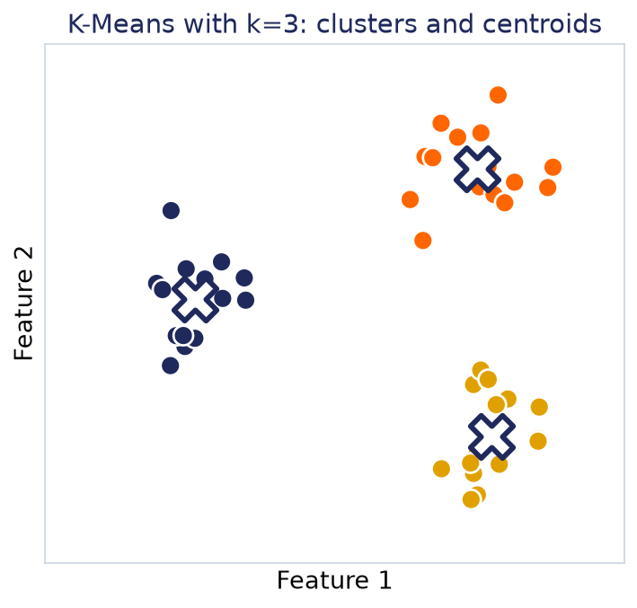
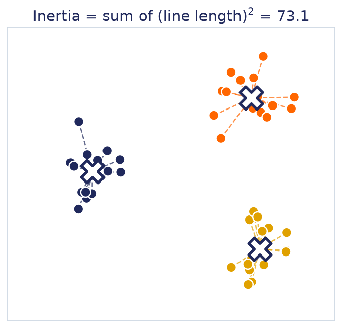
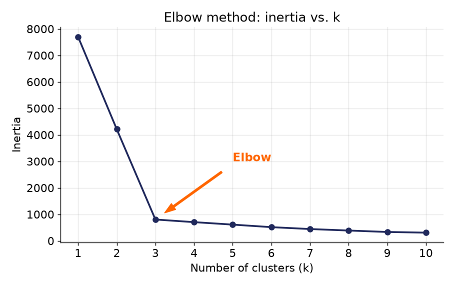
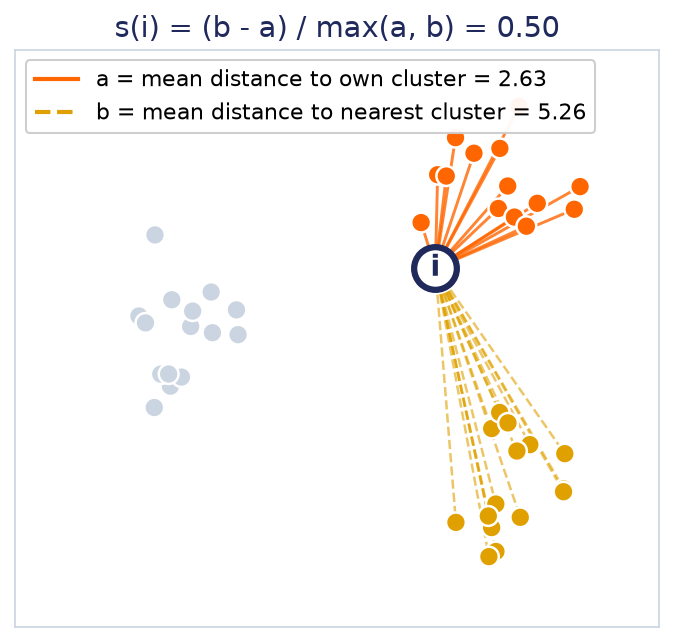
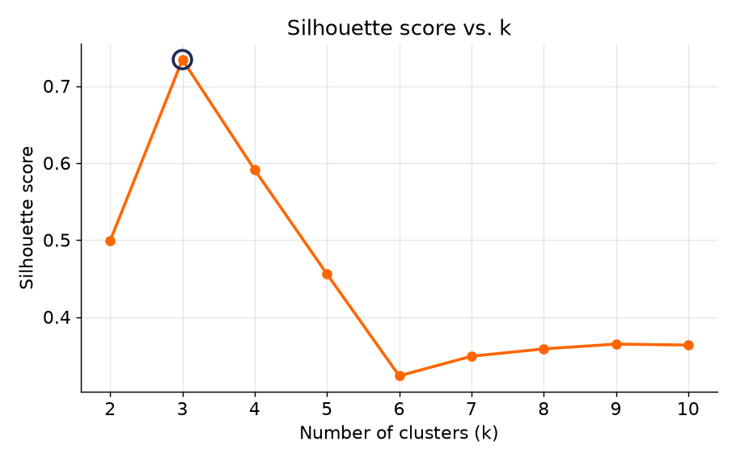
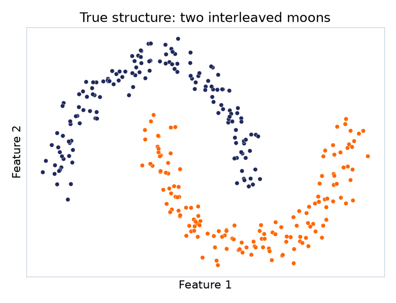
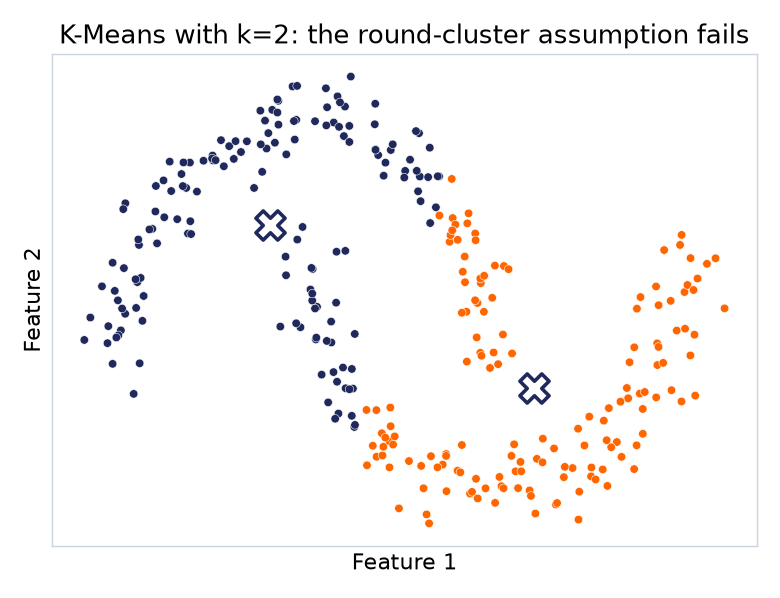

فرض کنیم میدانیم چند خوشه میخواهیم؛ به این عدد k میگوییم.
هدف: داده را به k خوشه تقسیم کنیم، طوری که نمونههای هر خوشه تا حد ممکن به هم نزدیک باشند.
مفهوم پایه
Centroid: مرکز هر خوشه
هر خوشه یک نقطهی مرکزی دارد به نام Centroid.
بهزبان ساده، همان مرکز ثقل نقاط آن خوشه است؛ اگر همهی نقاط یک خوشه را تصور کنیم،
Centroid تقریباً وسط آنها قرار میگیرد.
الگوریتم
K-Means چطور کار میکند؟
۱انتخاب اولیهی Centroidها: بهصورت تصادفی، k نقطه بهعنوان مرکز اولیه انتخاب میشود.
۲اختصاص هر نقطه به نزدیکترین Centroid: هر نمونه به نزدیکترین مرکز متصل میشود.
۳محاسبهی Centroid جدید: برای هر خوشه، مرکز دوباره از روی میانگین نقاطش محاسبه میشود.
۴تکرار: قدمهای ۲ و ۳ آنقدر تکرار میشوند تا Centroidها دیگر تقریباً جابهجا نشوند.
مثال ۱ · همان چهار قدم، روی یک دادهی کوچک
یک شروع معمولی: Centroidها در فضا پخش شدهاند

رنگ هر نقطه = نزدیکترین Centroid.
ضربدر کمرنگ جای قبلی Centroid است و فلش نشان میدهد به میانگین نقاطش کجا رفته.
بعد از سه بهروزرسانی، دیگر چیزی جابهجا نمیشود و هر Centroid وسط یک خوشه نشسته است.
مثال ۲ · همان داده، شروع نامرتبتر
شروع بد هم گاهی به جواب درست میرسد

هر سه Centroid اول داخل همین یک خوشه افتادهاند؛ دو خوشهی دیگر اصلاً Centroidای ندارند.
با این حال، بعد از چند بهروزرسانی، Centroidها خودشان را جدا میکنند و به همان سه خوشهی درست میرسند.
پس شروع بد همیشه باعث شکست نمیشود؛ فقط احتمال شکست را بالا میبرد. مثال بعدی نمونهای را نشان میدهد که واقعاً شکست میخورد.
مثال ۳ · همان داده، شروع بد دیگر
اما اینبار، شروع بد به جواب اشتباه میرسد

دو Centroid در خوشهی چپ شروع کردهاند و سومی بین دو خوشهی راست.
الگوریتم همگرا شد، اما به جواب اشتباه: خوشهی چپ دو تکه شده و دو خوشهی راست یکی شدهاند.
K-Means فقط تضمین میکند همگرا شود، نه اینکه بهترین جواب را پیدا کند.
نتیجه به نقطهی شروع بستگی دارد (local optimum).
راهحل scikit-learn (هر دو پیشفرض):
k-means++ مراکز اولیه را دور از هم انتخاب میکند، و
n_init الگوریتم را چند بار اجرا و بهترین نتیجه را نگه میدارد.
نتیجهی نهایی
هر نمونه یک برچسب خوشه میگیرد
بعد از همگرایی، به هر نمونه یک برچسب خوشه اختصاص داده میشود (اینکه به کدام خوشه تعلق دارد)،
و مختصات هر Centroid هم بهعنوان مرکز نهایی آن خوشه ذخیره میشود.
این برچسبها فقط شمارهی خوشه هستند، نه یک هدف واقعی؛ هیچکس از قبل به مدل نگفته «خوشهی صفر» یعنی چه.

سوال بعدی
در مثال قبل، خودمان میدانستیم k=3 است؛ چون خودمان داده را همینطور ساختیم.
در دنیای واقعی، هیچکس k را به ما نمیگوید.
معیار اول
Inertia: چطور محاسبه میشود؟
مجموع مجذور فاصلهی هر نمونه تا Centroid خوشهی خودش. هرچه نقاط به مرکزشان نزدیکتر باشند، Inertia کمتر است.
Inertia =
nΣi=1
‖ xi − μc(i) ‖2
xi: نمونهی iام ·
μc(i): Centroid خوشهای که xi در آن است ·
‖…‖²: مجذور فاصلهی اقلیدسی
همین کار را برای همهی خوشهها انجام میدهیم و همه را جمع میزنیم؛ در scikit-learn: kmeans.inertia_

برای مثال ۱ Inertia ≈ 73 است؛ برای شروع بد (مثال ۲) ≈ 403.
معیار اول · محدودیت
پس کمترین Inertia را انتخاب کنیم؟
برای یک k ثابت، بله: بین مثال ۱ (≈ 73) و مثال ۲ (≈ 403)، Inertia کمتر یعنی خوشهبندی بهتر؛
n_init هم دقیقاً همینطور بهترین اجرا را انتخاب میکند.
اما وقتی خود k را تغییر میدهیم، یک مشکل جدی پیش میآید: هرچه k را بیشتر کنیم، تقریباً همیشه میتوانیم نقاط را به خوشههای کوچکتر تقسیم کنیم و Inertia باز هم کمتر میشود.
اگر همینطور ادامه دهیم، وقتی تعداد خوشهها برابر تعداد نمونهها شود، Inertia تقریباً صفر میشود.
پس کمترین Inertia لزوماً بهترین خوشهبندی نیست.
راهحل اول
Elbow Method
برای چند مقدار مختلف k، Inertia را رسم میکنیم و دنبال نقطهای میگردیم که بعد از آن، افزودن خوشهی بیشتر دیگر بهبود قابلتوجهی ایجاد نمیکند.

راهحل دوم، دقیقتر
Silhouette: چطور محاسبه میشود؟
نقطهی خمیدگی در Elbow همیشه واضح نیست. Silhouette برای هر نمونه میپرسد: چقدر به خوشهی خودش نزدیک است و چقدر از نزدیکترین خوشهی دیگر دور؟
۱a(i): میانگین فاصلهی i تا بقیهی نمونههای خوشهی خودش (کوچکتر = بهتر)
۲b(i): میانگین فاصلهی i تا نمونههای نزدیکترین خوشهی دیگر (بزرگتر = بهتر)
s(i) =
b(i) − a(i)max( a(i), b(i) )
a = 2.63 , b = 5.26
s = (5.26 − 2.63) / max(2.63, 5.26) = 2.63 / 5.26 ≈ 0.50
Silhouette Score = میانگین s(i) روی همهی نمونهها؛
در scikit-learn: silhouette_score(X, labels)

راهحل دوم · تفسیر
Silhouette Score برای انتخاب k
a ≪ b: نمونه جای درستی است ·
a ≈ b: روی مرز دو خوشه ·
a > b: احتمالاً در خوشهی اشتباه.
برای هر k امتیاز را حساب میکنیم و بیشترین را انتخاب میکنیم.
-۱ (بد)۰ (همپوشانی)+۱ (خوب)

نکتهی مهم آموزشی
یک الگوریتم خوب، همیشه جواب نمیدهد؛ باید بدانیم کِی شکست میخورد
۱
شکل خوشهها
برای خوشههای گرد، فشرده و جدا از هم مناسبتر است.
۲
نقاط پرت
چون Centroid میانگین است، یک نقطهی پرت میتواند آن را جابهجا کند.
۳
انتخاب k
باید از قبل تعداد خوشهها را مشخص کنیم؛ الگوریتم خودش این را کشف نمیکند.
۴
مقیاس ویژگیها
ویژگیهای با مقیاس بزرگتر، فاصله (و کل الگوریتم) را تحت تأثیر قرار میدهند.
همان درس هفتهی ۶: پیشپردازش هنوز هم مهم است؛ حتی وقتی یادگیری نظارتشده نداریم.
وقتی فرض «گرد بودن» درست نیست
یک مثال که K-Means در آن شکست میخورد

ساختار واقعی: دو هلال کاملاً مشخص.

نتیجهی K-Means با k=2: هر هلال از وسط نصف شده.
ما دقیقاً گفتیم دو خوشه میخواهیم؛ پس چرا نتیجه هنوز بد است؟
مشکل تعداد k نیست؛ مشکل فرض شکل گرد در خود الگوریتم است.